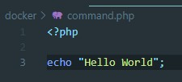

Для установки Docker необходимо скачать установщик для своей ОС (Если старый Windows? например win 8 и ниже то необходимо скачать DockerToolbox)
Установка тривиальная, единственно, то что потребуется использование VirtualBox, но он установится вместе с диструбутивом DockerToolbox. После установки на рабочем столе появится ярлык Docker Quickstart Terminal. Этот ярлык необходимо запускать с правами администратора. При первом запуске, Docker закачает линуксовую оболочку, внутри которой будут запускаться образы приложения. После успешной установки мы увидим вот такой результат:
После установки Docker вводим в консоли докера вот такую команду
docker versionВ результате мы увидим это:

Что бы посмотреть все контейнеры в системе вводим команду
docker ps -aВот результат

Образ - представляет из себя файловую систему с параметрами используемыми при запуске. Он не имеет состояния и никогда не меняется
Контейнер - является запущенным экземпляром образа. Когда вы выполняете команду запуска, Docker Engine
Docker
По всему миру люди создают Docker образы. Вы можете искать и просматривать эти образы на Docker Hub.
Откройте в вашем браузере Docker Hub
В строке поиска вводим whalesay
Кликните по docker/whalesay образу в результатах поиска. Браузер отобразит репозиторий для образа whalesay.

Каждый репозиторий образа содержит информацию о разновидностях содержащегося программного обеспечения и о том как им пользоваться. Нужно заметить что образ whalesay основан на дистрибутиве Ubuntu.На следующем шаге, вы запустите образ whalesay на вашем компьютере.
Введите команду docker run docker/whalesay cowsay boo и выполните ее.
Эта команда запускает образ whalesay в контейнере. Результат выполнения будет примерно таким:
При первом запуске образа, команда docker ищет образ в вашей системе. Если образ не обнаружен, то docker скачает его с Docker Hub.
Пока вы до сих пор находитесь в терминале командной строки, введите команду docker images.
Команда отображает список образов в локальной системе. В результате вы увидите docker/whalesay в этом списке
На нашем АРМ должен быть установлен Docker и Docker-Compose для проверки можем ввести команды для проверки (все команды вводим обязательно через Docker Quickstart Terminal):
docker -vДля просмотра образов вводим команду:
docker imagesДля просмотра контейнеров вводим:
docker ps -aВ папке с проектом создаем файл с именем Dockerfile. В этом файле мы можем выполнять n-ое количество команд
На хабе Docker ищем образ php + apache
Заходим внутрь него
Нам нужн образ который сразу идет с apache? например нам подходит версия образа 3.3.7-apache, для его установки мы вводим вот такую команду:
docker pull php:3.3.7-apacheТеперь если ввести в терминале Docker список образов то мы увидим там установленный php + apache
Следующее что нам надо установить - это composer
Для этого вводим команду:
docker pull composerТеперь для проверки в нашем проекте создадим папку docker и в ней создадим файл php который назовем command с вот такми содержимым:
Теперь что бы запустить наш скрипт вводим в терминале докера вот такую команду:
docker run --rm -v $(pwd):/app php:7.3.3-apache php /app/command.phpВ итоге после выполнения этой команды мы должны увидеть в консоли вот такую картину
Теперь создадим не одноразовый контейнер, например запустим контейнер к которому мы достучимся через браузер, т.е. у нас запустится вебсервер apache с работающим php сервером и через который мы откроем сайт в браузере
В проекте создадим файл index.php и внутри он будет содержать вот такой код:
Теперь вызов нашего скрипта будет выглядеть вот так:
docker run -p 8080:80 -v $(pwd):/var/www/html php:7.3.3-apache